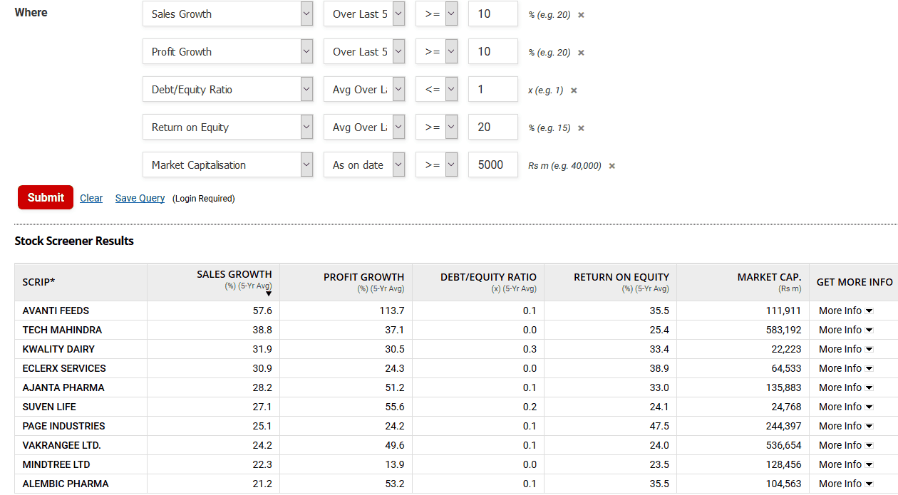
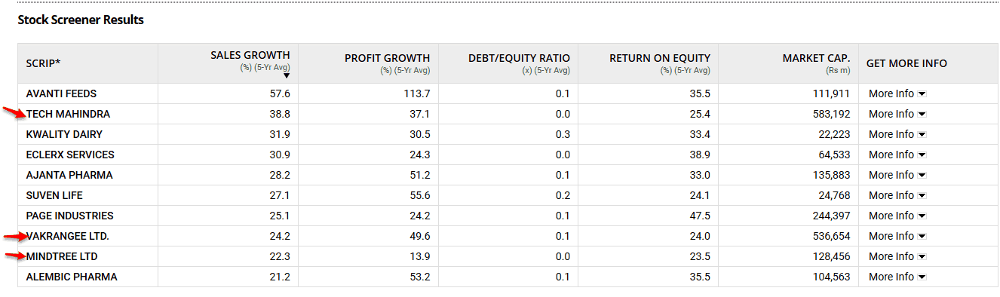
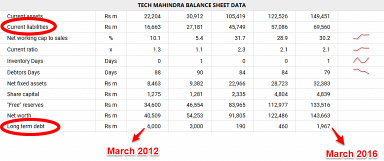
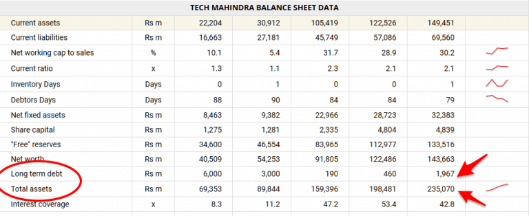
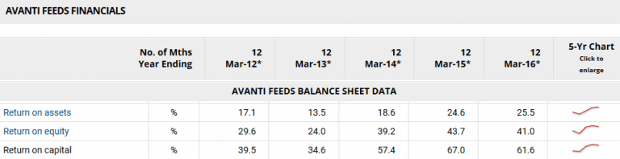
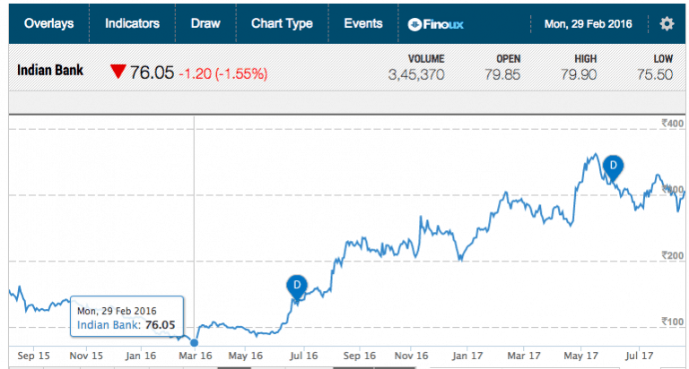
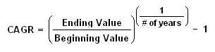
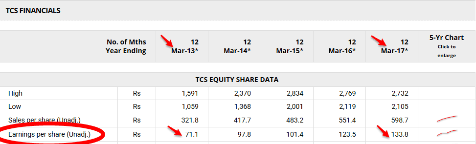

-Prajwal Sakle
07 Sept 2021
There are many top investors who beat the Nifty by generating returns in the range of 35% to 60%. They bagged big profits because of their years-long experience with stock markets.
You must have generated low returns or may have lost money in stocks.
In my initial days of investing,
I did not make any profits because I was investing in stocks after listening to the stock tips from brokerage houses (and so-called experts on Youtube channels ).
It’s their business. Everyone from a brokerage house to financial websites to experts on TV channels makes you believe that investing in stocks is very complex like rocket science. After all, if you know how to select stocks on your own, then how would they make money.
But, what if I tell you that there is an easy and simple way to identify some great stocks!
Let’s see a step by step guide on how to invest in the share market in India
Screening and Filtering the right stocks using Financials
Select only the companies that you understand
Look for companies with sustainable Moat (competitive advantage)
Find Low Debt Levels Companies
Use financial ratios RoE and RoCE to identify the right stocks
Honest, Transparent, and Competent Management
Find the Right Price to Buy the Stock
You can learn about stock investments with as little as Rs. 10,000 investment.
Learn the approach and apply with 10,000 investment, if you make 5000 profits in the first year then the same approach can be applied with Rs. 10,00,000 investment to make Rs. 5,00,000 as profits in the future.
"Learning is more important than earning in the initial days."
George F. Baker, an American financier and philanthropist once famously gave the mantra
“To make money in stocks you must have the vision to see them, the courage to buy them, and the patience to hold them.”
There are literally thousands of companies listed on the BSE( Sensex) and NSE(Nifty). Unless you are armed with an approach that you could use to filter out, you would get lost in the sea of companies.
The investing approach that I am going to share with you is the one that I personally practice to filter stocks before investing in them.
Value investing is an ocean in itself and its practitioners go through a tedious process of analyzing stocks by reading through the financial statements, annual reports, and various other information pertaining to the financial health of the company before investing.
But, based on my learnings over the past many years, I have come up with the following simple and practical steps that you use to kick-start your journey of picking stocks even without having deep financial knowledge.
There are thousands of stocks listed on BSE and NSE and it’s almost impossible to investigate each and every one of them by going through their entire financial information.
Therefore, for your initial consideration, you can use the below easy to implement screening criteria to filter out those stocks whose fundamentals look strong.
Screening criteria
Market Cap > Rs 500 cr
Sales and Profit growth >10%
Earnings Per Share(EPS) growth rate is increasing for the past 5 years
Debt to Equity Ratio less than 1
Return on Equity(RoE) hreater than 20%
Price to Book value(P/B) less than or equal to 1.5 or low compared to peer companies within the same industry
Price to Earnings(P/E) less than 25 or low compared to peer companies within the same industry
Current Ratio > 1
You don’t have to scratch your head to get the above financial information. Online screener tools available on financial platforms like Moneycontrol and EquityMaster provide this information readily.
For example, with the help of Equitymaster’s free stock screener tool, I applied the above screening criteria to filter some of the stocks for my initial consideration.
You can then check the other financial ratios as part of the screening criteria by clicking on the company factsheet

To know more in detail about the parameters I have used in screening criteria to filter out stocks you can refer this article on financial ratios.
Now that based on Step 1 you have filtered out stocks with good fundamentals from rest of the garbage, learn more about these stocks by reading about the underlying company as much as you can.
You can do this by visiting the website of the company, tracking updates on media platforms, searching for the company on Google, and getting peer feedback from fellow investors.
Learning more about the company will help you to understand the company’s business and will provide answers to three key questions
Is the company’s business simple?
Do I understand the product/service?
Do I understand how the business works and makes money?
It is important that you invest in companies that you understand, at least in the initial stage when you are learning to invest in stocks. That way you will be ensuring that you don’t lose money.
For example, from the stocks that we filtered in Step 1, I would have looked at technology stocks like Tech Mahindra, Vakrangee, and Mindtree Ltd to begin with.

That is because, I have significant work experience in the IT sector and I am also passionate about technology which makes it easy for me to understand these businesses, the reasons for their growth, and predict how the future could turn out to be.
Similarly, my cousin comes from a Pharma background and therefore it would be easy for him to understand the stocks in that sector.
There could be many businesses that may not require any kind of background to understand at all – think consumer products like footwear, shaving cream, automobiles etc.
For example, your filtered list of stocks has a two-wheeler manufacturing company. You need not to have a background in the two-wheeler industry to know that the two-wheeler sector has always shown growth in India due to increasing demand and better road connectivity.
Similarly, when the real estate sector was growing in India, then the companies which manufacture tiles (Kajaria), sanitary (Cera), and similar supporting companies could be accessed.
The business model of the company should be simple and the company should excite you.
Lastly, if you do not find any stocks (companies) that you can right away understand, spend time studying the company and its sector.
It’s not enough that you identify companies that have passed the test of financial numbers and whose business models are easy to understand.
It is equally important to analyze the company from a qualitative aspect – Moat.
In business terminology, Moat is the competitive advantage that one company has over the other within the same industry. The wider the moat, the larger the competitive advantage of the company and more sustainable the company becomes.
Which means, it would be very difficult for the competitors to displace that company and capture its market share.
Now, that’s a stock(company) you would want to select and invest in.
Examples of this Moat can be brand power, intellectual property rights and patents, network effects, govt. regulations controlling barriers to entry, and many more.
For example – Apple has a strong brand name, pricing power, patents, and huge market demand that give it a wide moat which acts as barriers against other companies.
No wonder that Apple is close to becoming a trillion-dollar company and has generated huge profits year after year, making great returns for its investors.
Another simple example of brands with strong moats is Maruti, Colgate, Fevicol which have huge recall value in public memory.
Given its huge distribution network across many states and the push for digitisation from govt, it would be very difficult for a new competitor to displace them off the market.
No wonder that the stock’s price soared from Rs 16 in 2010 to Rs 500+ in 2017. (Note: The current prices may go up and down based on the short-term pain in the markets)
So, look out and identify such companies with strong moats in the initial days.
Large debt levels pose a significant risk to the company. Couple of screening criteria which we used to filter the stocks were Debt to Equity Ratio and Current Ratio.
These two ratios are indicators of how heavily is company dependent on borrowed capital(debt) to fund its growth and whether the company will be able to meet its short-term capital obligations.
So when you are selecting stocks, apart from these ratios, check out how the company is handling its debt over the past many years. The company that is reducing its debt will automatically increase its profits which is a positive sign for the financial health of the company.
Simple Tips to Check Financial Health:
One way to do this is to check the company’s balance sheet where the company’s current liabilities and long-term debt is listed. In general, long-term debt is the debt that comes to due after a period of 12 months. And current liabilities includes the company’s debt that must be paid within the year.
Companies with too much long-term debt will find it hard to pay off these debts since most of their capital is going to interest payments, making it difficult to use the money for other purposes.
This poses a risk of sustainability and may lead to the bankruptcy of the company.
For example, below is the Tech Mahindra’s balance sheet showing the decreasing long-term debt from the year 2012 to 2016 which is a positive sign for the company.

Another way to check whether the debt levels are in a healthy state or not is by looking at the long-term debt ratio.
The long-term debt ratio essentially measures the total amount of long-term debt in relation to the total assets of a company.
A simple formula being
Long-term Debt Ratio = Long-term Debt / Total Assets

Taking values from the above balance sheet of Tech Mahindra, you can calculate the
Long-term debt ratio which comes to 0.008
If the ratio’s value is above 1, that would mean it has more long-term debt than it has assets. This means a high risk of not being able to meet its financial obligations.
In general, you would want to have a ratio which is less than 0.5, which in this case it is, indicating a low risk for the company.
Lastly, a rule of thumb watch out for real estate companies, infrastructure companies, and banks that are notorious for having large debts.
Warren Buffett makes use of these two financial ratios RoE(Return on Equity) and RoCE(Return of Capital Employed) to aid him in selecting the right stocks.
According to Investopedia, RoE is the percentage expression of a company’s net income as it is returned as a value to shareholders. This formula allows investors as an alternative measure of the company’s profitability and calculates the efficiency with which a company generates profit using the funds that shareholders have invested.
RoCE is the primary measure of how efficiently a company utilizes all available capital to generate additional profits.
These two financial ratios put together with help in understanding
How profitable a company is in terms of investments
How efficiently it is utilizing its resources
A company with high RoE and RoCE signals the great potential for future growth in value of the company.
Let’s take the example of Avanti Feeds, one of the stocks that we filtered using the screening criteria. As seen below in its balance sheet data, the RoE and RoCE are above 20% for the past 5 years and more or less have been increasing.
Companies that do well on these two ratios by being above 20% and increasing for the past 5 years command premium valuations.
Avanti Feeds stock has risen by over 7000% in the past 5 years creating huge wealth for its investors.

So, when selecting stocks, look whether the RoE and RoCE meet the criteria that I explained above.
Fraud management is one of the reasons some people do not trust the stock market with their savings. There have been many cases in the past where management of listed companies did shady deals, committed accounting frauds, misled shareholders & SEBI, causing a lot of monetary loss to investors.
A famous example being Ramalinga Raju of Satyam.
Therefore, it is very important that the stock and by extension the company you plan to invest in is run by honest, transparent, and competent management. The management includes Promoters, CEO/MD, CFO among others.
One such company run by competent and honest management that has created huge wealth for its shareholders is the one that I discussed earlier – Avanti Feeds.
As an investor, there are few ways to check if the management of the company has its heart in the right place or not
Search for fraud and track record:
Use Google to search the names of the management and check whether there are any reporting of fraud against the company executives. Also, check their professional qualifications and their track record.
Read Annual Reports:
Annual reports are a treasure trove of data to get a full understanding of the company and its management. Studying annual reports helps you to understand the management’s analysis, strategy, notice, and future vision for the company.
Ofcourse, on the face of it, everything would look good as the CEO of the company who has prepared the annual report wants to keep the investors interested in his/her stock intact. But, with experience, you will learn to figure out who is genuine and who is bluffing.
Tip: You can get the annual report at the company website as a free download. Alternatively, you can email the concerned investment relations in charge and get the annual report copy emailed.
Look out for Promoters shareholdingL
Higher the promoters shareholding in the company, the more positive signal it sends out to the market. In general, the promoters shareholding in the company may vary over the past many years.
However, if the promoters are increasing their stake in the company, it means that they have trust in the company, making it a good company to invest in.
Congratulations.
If you have reached this step, that means you have narrowed down upon a few stocks to invest in. The only question that remains is what is the right price to buy them?
Just want to mention what Warren Buffett said about pricing, “Price is what you pay, the value is what you get”.
Find a maximum valuable company by paying a minimum price.
No matter how good the company is, if you buy the stock at steep value and the stock’s future doesn’t turn up as per expectations, then you would lose money.
Buying at the right price would give you that margin of safety, protecting your investment from any downside risks. Often this right price is the price that is way below the intrinsic value of the stock i.e way below the actual worth of the stock.
When the stock is available at such a deep discount (bargain) to its intrinsic value in the market, you grab it immediately.
This way you are buying the stock very cheap while increasing the chances of generating great returns in the future.
For example, one of the stock that I bought was the Indian Bank. It was trading in the range of Rs 70 to 90. But, its actual worth i.e its intrinsic value was at least Rs 250. That was a great time to grab the stock and people who did so, including me, made good money as the stock hit Rs 300 in less than one year.

One of the best way to calculate the intrinsic value of the stock is through the Discounted cash flow model(DCF)
Let me also share formula to calculate the intrinsic value of the stock which is based on Benjamin Graham’s original formula to calculate the intrinsic value.
I will not say that the intrinsic value estimated by this formula is absolutely perfect. But for newbie investors, it will give a fair idea about the true value of stocks.
The formula is very simple
V = EPS * (8.5+1*G)
Here V = Intrinsic Value of the Stock
EPS = EPS (earnings per share) for the last 12 months (one financial year)
8.5 = Assumed common P/E ratio for any stock
G = Expected Annual Growth rate (for the upcoming 7 to 10 years)
For example, let’s take the stock TCS(Tata Consultancy Services)
Current Market Price of a Stock = Rs 3118
EPS =133.8
Expected Annual Growth Rate can be calculated by the below formula

In case of TCS, CAGR = (133.8/71.1)^¼ – 1

Here, I have taken number of years as 4 as I have data only for the past 4 years as seen in the above picture. Ideally, you should take the number of years as 5.
Secondly, we are using the growth rate of the last 5 years to arrive at the future growth rate G.
So, CAGR = 0.171 or 17.1%
Therefore, Intrinsic Value of the Stock V = 133.8 * (8.5 + 1*17.1) = Rs 3425
But, the current market price of stock = Rs 3118
This means currently the stock is undervalued as it is trading 9.8 % below its Intrinsic Value
You can also think that the future growth G may not be the same as its last 5 years growth rate. In that case, you can assume future growth G = 75% of past i.e 75% of 17.1 = 12.82 %
Now, Intrinsic Value of the Stock V = 133.8 * (8.5 + 1*12.82) = Rs 2852
This way you get a range of the Intrinsic Value i.e Rs 2852 to Rs 3425 which helps you to check whether the stock is available at a cheap price or not.
Now, if the stock is not available at a cheap price, continue to monitor the stock so that when the opportunity arrives you can load it up immediately.
Note: One should not buy stocks on the basis of this formula alone as it would lead to errors and losses. Please always check the true value of stocks by using fundamental analysis tools like the DCF model and then cross verify using this formula.
You don’t need an elite MBA or a Finance degree to know how to invest in stocks. Some of the best investors in India and around the world come from very humble and normal academic backgrounds.
And, ultimately, your investing success will boil down to this simple formula
Investing Success = Identifying a Good Company + Buying at Right Price + Holding with Patience